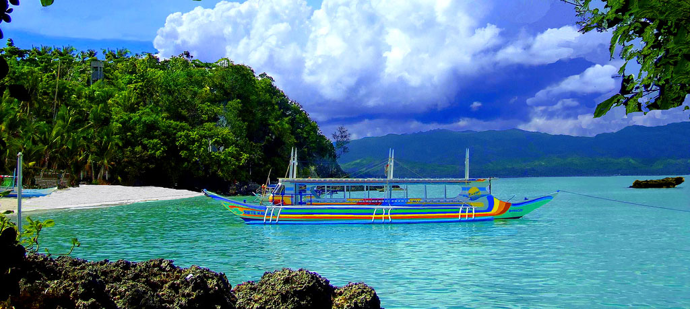
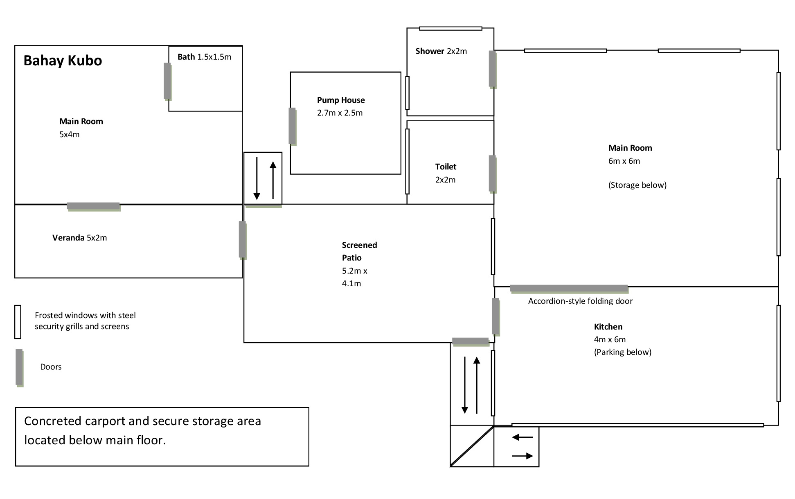

<ion-view hide-nav-bar="true">
  <ion-content class="philippinespic padding" ng-controller="GalleryCtrl">
    <div class="philippines">
      <h1 class="tagline">Life in the Philippines</h1>
    </div>

    <div class="main-images">
      </img>
    </div>
    <div class="pi-frame">
      <p>We made several visits to the Philippines between 1997 and 2010. In August 2010 we took a chance on living there permanently. Having visited much of Luzon, the Visayas and Palawan we decided it best to stay on Luzon. We rented an apartment in Quezon City (Manila) and started looking for a parcel of land. After 6 months we settled on a 1 hectare piece of farmland near Lucban, Quezon Province about 200 kilometers southeast of Manila. We drew up a floor plan, found a contractor and started building. The first stage was to set up a bamboo hut (known as 'bahay kubo') to live in while the main house was built. Second was to drill a well and bring in electricity. In the early part of the bahay kubo experience we had no water and no electricity on the property. What a relief it was when we finally had both! In September of 2011 our house was completed and we transferred from the kubo to the main house.</p>
      <p>The next two years were spent fighting back the jungle, dealing with insects, harsh weather, corrupt local politicians and an increasingly frustrating government bureaucracy. While there were many good points such as lots of delicious and inexpensive fresh food, privacy, peace and quiet and beautiful scenery it didn't outweigh the negatives, the biggest of which was boredom. In 2013 we sold our little piece of 'paradise' and returned to the US.</p>
      <p>It was a unique and eye-opening experience. There's a huge difference between visiting a place and living there for an extended period. It made us appreciate the United States, especially when compared to developing nations. Even with all the problems it's still a fantastic place to live.
      </p>
      <p>Below are a few pictures we took in the Philippines.</p>
    </div>
    <a class="item item-list-detail">
      <ion-scroll direction="x">
        
      </ion-scroll>
    </a>
    <div class="lucban-frame">
      <h3 id="lucban-subheading">Our Lucban House</h3>
      <p>The house we built in the Philippines was very simple by American standards (though our neighbors thought it was a mansion). No fancy built-in closets, very simple plumbing and electrical, no air-conditioners and very few rooms. The intention wasn't to keep the cost down, it was to make the house easy to maintain. Being away from a major city meant if
      anything needed repair, we'd have to do it ourselves.</p>
      <p>The main house was constructed of steel-reinforced concrete block. It measured about 60 sq. meters (645 square feet) which included the kitchen, living room, a shower room and a CR. The 30 sq. meter kubo was constructed mostly of bamboo and coco-lumber with an anahaw leaf roof but sat on a concrete post and beam foundation. The kubo also contained a tile-lined concrete shower room and bamboo wardrobes making it a sort-of master bedroom suite. The main house and the kubo were connected by a 22 sq. meter patio. This made the total house around 112 sq. meters (1200 square feet) not including the parking and storage underneath.</p>
      <div class="lucban-floor-plan">
        </img>
      </div>
      <p>Because of the elevated foundation, open floor plan, abundant windows and vented cupola the house required no air conditioning, just a few electric fans.</p>
      <p>The local electical utility was paid to extend their primary line down the road to our property. Water was supplied by a 280 foot well we had drilled on the property. We designed and installed our own septic system.</p>
      <p>It all resided on a secluded 10,097 sq. meter piece of land (about 2 1/2 acres) surrounded by farm land and coconut trees. We raised chickens and ducks, grew banana, bitter melon, passion fruit and other foods. Due to this secluded location there
      was no land-line telephone or Internet. We were able to put an aerial antenna
      on top of the house to get a few TV stations. Our Internet access was via 3G cellular
      data. We had to put a signal booster on a 50 foot tall bamboo pole then run a cable from the booster to a omni-directional antenna inside the house. Our laptop had a USB device to connect wirelessly. Sometimes we could get a decent phone signal but often we'd have to walk out to the main road to make a call.</p>
      <p>Here's a few pictures of that house. Note the bamboo electrical poles.</p>
    </div>
    <a class="item item-list-detail">
      <ion-scroll direction="x">
        
      </ion-scroll>
    </a>
  </ion-content>
</ion-view>
